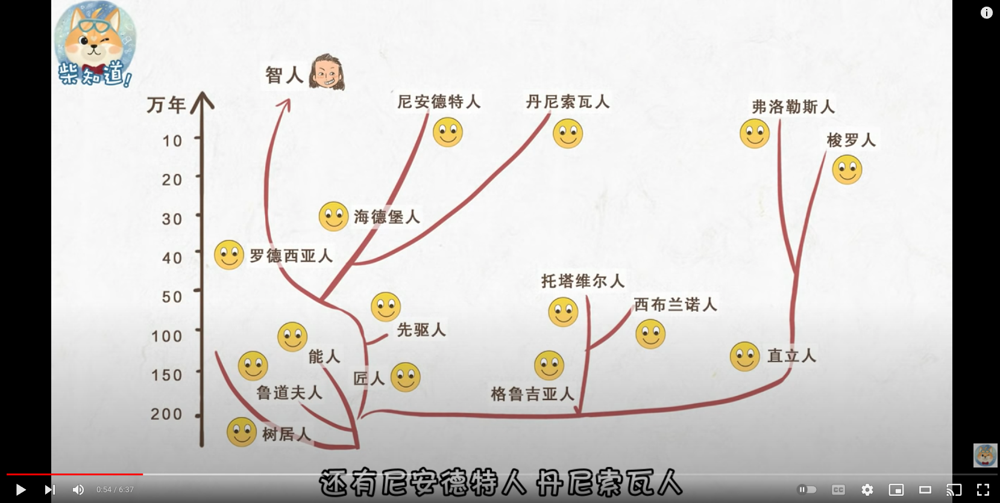

生物
人类

- 1802 年, 德国巴格利亚, 冯·史兰克发现寄生瓢虫。
-
1922 年 9 月, 安得思发现最大的陆兽化石, 巨犀 (Paraceratherium) 。
- 1923 年 7 月, 安得思发现恐龙蛋化石。
-
1924 年 ~ 1925 年, 安得思发现各类恐龙化石: 原角龙 (Protoceratops) ,
伶盗龙/迅猛龙 (Velociraptor), 绘龙 (Pinacosaurus) 。
-
1998 年, 捷克弗兰格(Jaroslav Flegr)在猫咪实验中发现了弓形虫的秘密。
- Annie Oakley
- Albert Einstein
- Ben Franklin
- Harry Houdini
- Maria Tallchief
- Amelia Earhart
- Wolfgang Amadeus Mozart
- Thomas Jefferson
- Helen Keller
- Eleanor Roosevelt
- Mark Twain
- Ferdinand Magellan
- Ronald Reagan
- John F. Kennedy
- Louis Armstrong
- Charles Darwin
- Leonardo da Vinci
- Johnny Appleseed
- Thomas Alva Edison
- Beatles
- King Tut
- Daniel Boone
- William Shakespeare
- Anne Frank
- Marco Polo
- Elvis Presley
- Martin Luther King, Jr.
- Queen Elizabeth
- Neil Armstrong
- Abraham Lincoln
- George Washington
- Walt Disney
- Claude Monet
- Pablo Picasso
- Barack Obama
- Franklin Roosevelt
- Jim Henson
- Jackie Robinson
- Rosa Parks
- Dr. Seuss
- Paul Revere
- Babe Ruth
- Steve Jobs
- J.K. Rowling
- Jane Goodall
- Roald Dahl
- Bill Gates
- Sally Ride
- Maurice Sendak
- Christopher Columbus
- Bob Dylan
- Michelle Obama
- Davy Crockett
- Alexander Graham Bell
- Nelson Mandela
- Ernest Shackleton
- Frida Kahlo
- Laura Ingalls Wilder
- Steven Spielberg
- Milton Hershey
- Abigail Adams
- Louis Braille
- Dolly Parton
- Wright Brothers
- Theodore Roosevelt
- George Lucas
- Bruce Lee
- Ulysses S. Grant
- Robert E. Lee
- Queen Victoria
- Muhammad Ali
- Clara Barton
- Marie Curie
- Henry Ford
- Roberto Clemente
- Rachel Carson
- Susan B. Anthony
- Isaac Newton
- Julius Caesar
- Gandhi
- Genghis Khan
- Alfred Hitchcock
- Stan Lee
- Betsy Ross
- Frederick Douglass
- Charles Dickens
- Sitting Bull
- Andy Warhol
- Gloria Steinem
- Galileo
- Robert Ripley
- Jesus
- Wayne Gretzky
- Winston Churchill
- Harriet Beecher Stowe
- Jacques Cousteau
- Mother Teresa
- Steve Irwin
- Beatrix Potter
- J. R. R. Tolkien
- Edgar Allan Poe
- Malala Yousafzai
- Jesse Owens
- Richard Branson
- Brothers Grimm
- Derek Jeter
- Jeff Kinney
- Julia Child
- Marie Antoinette
- Seabiscuit
- Blackbeard
- Frank Lloyd Wright
- Sojourner Truth
- George Washington Carver
- Maya Angelou
- Joan of Arc
- Elton John
- Jules Verne
- Alexander the Great
- Hillary Clinton
- Milton Bradley
- Bruce Springsteen
- Three Stooges
- Stevie Wonder
- Charlie Chaplin
- Jacqueline Kennedy
- Sonia Sotomayor
- Lucille Ball
- Cesar Chavez
- Rolling Stones
- Princess Diana
- Pete Seeger
- Bob Marley
- Venus and Serena Williams
- Pope Francis
- Alexander Hamilton
- Fidel Castro
- Lewis Carroll
- Ralph Lauren
- Chuck Jones
- Jane Austen
- Coretta Scott King
- Henry VIII
- Booker T. Washington
- Aretha Franklin
- the Dalai Lama
- Leif Erikson
- Pelé
- Tuskegee Airmen
- Selena
- Bono
- Judy Blume
- Nikola Tesla
- Napoleon
- Michael Jordan
- H. J. Heinz
- Norman Rockwell
- Stephen Hawking
- Che Guevara
- P. T. Barnum
- Oprah Winfrey
- R. L. Stine
- Harriet Tubman
- Mister Rogers
- Sam Walton
- Ruth Bader Ginsburg
- Jackie Chan
- Richard Nixon
- Temple Grandin
- Harvey Milk
- Ida B. Wells
- David Beckham
- Celia Cruz
- Benedict Arnold
- Nellie Bly
- Confucius
- Duke Ellington
- Catherine the Great
- Walt Whitman
- Levi Strauss
- RuPaul
- A. A. Milne
- Neil deGrasse Tyson
- Juliette Gordon Low
- Navajo Code Talkers
- David Bowie
- Queen Elizabeth II
- Stanley and Livingstone
- Dale Earnhardt Jr.
- Charles Schulz
- Ernest Hemingway
- Jimmy Carter
- Johnny Cash
- Ponce de León
- E. B. White
- Georgia O'Keeff